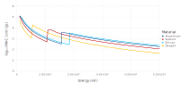

Getting Started With NeXLCore
Nicholas W. M. Ritchie, 16-Apr-2020
NeXLCore provides the core data, algorithms and data structures for the NeXL collection of microanalysis libraries.
NeXLCore and its dependencies BoteSalvatICX, FFAST and NeXLUncertainties are not currently available in the Julia registry. So you must use the GitHub URL to install NeXLCore.
using Pkg
# We need to first install three dependencies
Pkg.add(PackageSpec(url="https://github.com/usnistgov/BoteSalvatICX.jl"))
Pkg.add(PackageSpec(url="https://github.com/usnistgov/FFAST.jl"))
Pkg.add(PackageSpec(url="https://github.com/NicholasWMRitchie/NeXLUncertainties.jl"))
# Now install NeXLCore
Pkg.add(PackageSpec(url="https://github.com/NicholasWMRitchie/NeXLCore.jl"))Primarily NeXLCore provides:
- Definitions of data types relevant to X-ray microanalysis
Element: Borrowed from the third-partyPeriodicTablelibraryMaterial: Combinations ofElementsSubShell: RepresentingK,L1,L2,L3,M1,... sub-shellsAtomicSubShell: Representing aSubShellin a specificElementTransition: Representing a non-forbidden X-ray transition betweenSubShells - like "K-L3"CharXRay: Representing aTransitionin a specificElementKRatio: A ratio of X-ray intensities
- Algorithms to work on these data structures, including (but not limited to)
energy(xx)wherexxmay be anAtomicSubShellor aCharXRay(Always in eV!!!)mac(xx, yy)wherexxmay be anElementorMaterialandyymay be aCharXRayor aFloat64
NeXLCoredefines two useful macros. Learn them, love them, use them...n"???"which createsElements,SubShells,AtomicSubShells,Transitions andCharXRays fromAbstractStringsmat"???"which createsMaterials fromAbstractStrings likemat"AlNaSi3O8"
- Throughout
NeXL, units are always electron-volt (energy), centimeter (length), second (time), gram (mass) and angles are in radians even when it seems a little odd.- A foolish consistency? I think not...
NeXLuses Gadfly for plotting.- Many things you'd want to plot can be plotted using
using Gadfly; plot(x) - However, to minimize overhead, plotting support is not loaded (thanks to Requires) until Gadfly is explicitly loaded by the user.
- Many things you'd want to plot can be plotted using
NeXLuses DataFrames for tabular data.
Let's get this party started...
Load the library
using NeXLCoreElement
Constructing Element objects
julia> e1, e2, e3 = n"Ca", elements[20], parse(Element, "Pu")
(Element(Calcium), Element(Calcium), Element(Plutonium))
julia> es = parse.(Element, ["Ca", "21", "Ti", "Vanadium" ])
4-element Array{Element,1}:
Element(Calcium)
Element(Scandium)
Element(Titanium)
Element(Vanadium)
Note the use of n"??". We'll see a lot of this.
Elements come with lots of useful information...
e3Plutonium (Pu), number 94:
category: actinide
atomic mass: 244.0 u
density: 19.816 g/cm³
molar heat: 35.5 J/mol⋅K
melting point: 912.5 K
boiling point: 3505.0 K
phase: Solid
shells: [2, 8, 18, 32, 24, 8, 2]
e⁻-configuration: 1s² 2s² 2p⁶ 3s² 3p⁶ 4s² 3d¹⁰ 4p⁶ 5s² 4d¹⁰ 5p⁶ 6s² 4f¹⁴ 5d
¹⁰ 6p⁶ 7s² 5f⁶
appearance: silvery white, tarnishing to dark gray in air
summary: Plutonium is a transuranic radioactive chemical element w
ith symbol Pu and atomic number 94. It is an actinide metal of silvery-gray
appearance that tarnishes when exposed to air, and forms a dull coating wh
en oxidized. The element normally exhibits six allotropes and four oxidatio
n states.
discovered by: Glenn T. Seaborg
source: https://en.wikipedia.org/wiki/PlutoniumAs you can see, each element comes with many different properties which can be accessed by the field names. PeriodicTable uses Unitful to provide physical units for quantities.
julia> fieldnames(Element)
(:name, :appearance, :atomic_mass, :boil, :category, :color, :density, :discovered_by, :el_config, :melt, :molar_heat, :named_by, :number, :period, :phase, :source, :spectral_img, :summary, :symbol, :xpos, :ypos, :shells)
julia> e1.name, name(e1)
("Calcium", "Calcium")
julia> e1.symbol, symbol(e1)
("Ca", "Ca")
julia> e1.atomic_mass, a(e1)
(40.0784 u, 40.0784)
julia> e1.number, z(e1)
(20, 20)
julia> e1.boil
1757.0 K
julia> e1.density, density(e1)
(1.55 g cm^-3, 1.55)
julia> e1.el_config
"1s² 2s² 2p⁶ 3s² 3p⁶ 4s²"
Material
The Material structure carries composition information as mass fractions of the elements. This object also carries name, atomic weight, and other properties like density. A simple way to create Material objects is the mat"??" macro. To get the mass fraction's out index the object with an element. All the Elements in a Material are accessed via keys(...).
julia> albite = mat"AlNaSi3O8"
AlNaSi3O8[Al=0.1029,Si=0.3213,Na=0.0877,O=0.4881]
julia> albite[n"Al"], albite[n"Na"], albite[n"Tc"]
(0.10289723395373596, 0.08767415772881798, 0.0)
julia> keys(albite) # keys(...) for consistency with other Julia objects
Base.Generator{Base.KeySet{Int64,Dict{Int64,AbstractFloat}},typeof(element)}(NeXLCore.element, [13, 14, 11, 8])
julia> collect(keys(albite)) # Now maybe this is a little more clear
4-element Array{Element,1}:
Element(Aluminium)
Element(Silicon)
Element(Sodium)
Element(Oxygen)
julia> a(n"Na", albite)
22.989769282
You can enter mass fractions in directly using the mat"??" syntax.
mat = mat"0.8*Fe+0.15*Ni+0.05*Cr"0.8×Fe+0.15×Ni+0.05×Cr[Fe=0.8000,Ni=0.1500,Cr=0.0500]There are more sophisticated ways to create materials with additional properties. For example, I could have created a richer definition of albite.
julia> albite = parse(Material, "AlNaSi3O8", name="Albite", density=2.60, atomicweights=Dict(n"Na"=>23.0))
Albite[Al=0.1029,Si=0.3213,Na=0.0877,O=0.4881,2.60 g/cm³]
julia> all(e->a(e)==a(e,albite), keys(albite)) # Not all are default
false
julia> a(n"Na", albite), a(n"O", albite)
(23.0, 15.999)
julia>
ss = parse(Material, "0.8*Fe+0.15*Ni+0.05*Cr", name="Stainless", density=7.5)
Stainless[Fe=0.8000,Ni=0.1500,Cr=0.0500,7.50 g/cm³]
julia> ss[n"Fe"], density(ss), name(ss)
(0.8, 7.5, "Stainless")
julia> all(e->a(e)==a(e,ss), keys(ss)) # The atomic weights are the default values (from PeriodicTable)
true
Alternatively, I could have built albite in terms of atom fractions. Note that the mass fractions are different because the assumed atomic weight of sodium is different.
julia> albite2 = atomicfraction("Albite", n"Al"=>1, n"Na"=>1, n"Si"=>3, n"O"=>8, properties=Dict{Symbol,Any}(:Density=>2.6), atomicweights=Dict(n"Na"=>22.0))
Albite[Al=0.1033,Si=0.3225,Na=0.0842,O=0.4900,2.60 g/cm³]
using DataFrames
asa(DataFrame, albite2)4×7 DataFrame. Omitted printing of 2 columns
│ Row │ Material │ Element │ AtomicNumber │ AtomicWeight │ MassFraction │
│ │ String │ String │ Int64 │ AbstractFlo… │ AbstractFlo… │
├─────┼──────────┼─────────┼──────────────┼──────────────┼──────────────┤
│ 1 │ Albite │ O │ 8 │ 15.999 │ 0.489962 │
│ 2 │ Albite │ Na │ 11 │ 22.0 │ 0.0842174 │
│ 3 │ Albite │ Al │ 13 │ 26.9815 │ 0.103287 │
│ 4 │ Albite │ Si │ 14 │ 28.085 │ 0.322534 │There are many methods for transforming representation of the composition.
julia> ss = parse(Material,"0.78*Fe+0.15*Ni+0.04*Cr",name="Stainless")
Stainless[Fe=0.7800,Ni=0.1500,Cr=0.0400]
julia> analyticaltotal(ss)
0.9700000000000001
julia> atomicfraction(ss)
Dict{Element,AbstractFloat} with 3 entries:
Element(Iron) => 0.807719
Element(Nickel) => 0.147793
Element(Chromium) => 0.0444878
julia> normalizedmassfraction(ss)
Dict{Element,AbstractFloat} with 3 entries:
Element(Iron) => 0.804124
Element(Nickel) => 0.154639
Element(Chromium) => 0.0412371
julia> asnormalized(ss)
N[Stainless,1.0][Fe=0.8041,Ni=0.1546,Cr=0.0412]
compare(ss, asnormalized(ss))3×11 DataFrame. Omitted printing of 6 columns
│ Row │ Unkown │ Known │ Elm │ Cknown │ Cresult │
│ │ String │ String │ String │ Float64 │ Float64 │
├─────┼───────────┼──────────────────┼────────┼───────────┼─────────┤
│ 1 │ Stainless │ N[Stainless,1.0] │ Fe │ 0.804124 │ 0.78 │
│ 2 │ Stainless │ N[Stainless,1.0] │ Ni │ 0.154639 │ 0.15 │
│ 3 │ Stainless │ N[Stainless,1.0] │ Cr │ 0.0412371 │ 0.04 │It is also possible to define materials using NeXLUncertainties.UncertainValues. However, it is better to use the full uncertainty calculation to perform transforms since this handles correlated quantities correctly.
julia> ss=material("Stainless",n"Fe"=>uv(0.79,0.01),n"Ni"=>uv(0.15,0.003),n"Cr"=>uv(0.04,0.002))
Stainless[Fe=0.7900,Ni=0.1500,Cr=0.0400]
julia> ss[n"Fe"]
0.79 ± 0.01
julia> atomicfraction(ss)[n"Fe"]
0.8097 ± 0.01
SubShell
SubShell objects are not often used directly but are occasionally returned by other methods so I'll just mention them in passing. SubShell represent the notion of a sub-shell independent of which element it is associated with. There are properties of sub-shells that don't depend on the element like the angular momentum quantum numbers.
ss = n"L3"
shell(ss) # Shells are identified by a Char
NeXLCore.n(ss), NeXLCore.l(ss), NeXLCore.j(ss)
allsubshells
ksubshells, lsubshells, msubshells, nsubshells
```
There is one gotcha with `SubShell`s and the `n"??"` notation. What is `n"K"`? Potassium or the K-subshell? The answer
for `NeXL` is potassium. The K-subshell is `n"K1"` like the first L-subshell is `n"L1"`. (This is rarely ever an
issue)julia julia> n"K1", n"K" (K, Element(Potassium))
#### AtomicSubShell
`AtomicSubShell` joins an `Element` to a `SubShell`. You'll only be permitted to create `AtomicSubShell` objects
for sub-shells which exist for the ground state of the element.
(X-ray microanalysis only deals with ground state atoms. Astronomers and plasma physicists not so much...)
julia julia> ass = n"Fe L3" Fe L3
julia> shell(ass), ass.subshell (Shell[L], L3)
julia> jumpratio(ass) 6.34014793507294
julia> has(n"C",n"L3"), has(n"C",n"L2") # Carbon Kα1 is K-L2!!! (false, true)
julia> n"C L2" # works while n"C L3" throws an exception C L2
julia> energy(ass), energy(n"Ca K") (708.0999999999999, 4038.1)
julia> kk=n"K K" K K
julia> element(kk), shell(kk), kk.subshell # This works as you'd expect. (Relevant to the earlier gotcha notice...) (Element(Potassium), Shell[K], K)
#### Transition
Transitions are the analog to `SubShell`. They represent the non-element related information associated with optical
(in the broad sense) transitions. You can only create `Transition`s for transitions with a non-negligible transition
rate in some element.
julia julia> trs = n"K-L3", n"L3-M5", n"M5-N7" (K-L3, L3-M5, M5-N7)
julia> alltransitions (K-L2, K-L3, K-M2, K-M3, K-M4, K-M5, K-N2, K-N3, K-N4, K-N5, K-O2, K-O3, K-O4, K-O5, K-P2, K-P3, L1-M2, L1-M3, L1-M4, L1-M5, L1-N2, L1-N3, L1-N4, L1-N5, L1-O2, L1-O3, L1-O4, L1-O5, L1-P2, L1-P3, L2-M1, L2-M3, L2-M4, L2-N1, L2-N3, L2-N4, L2-N6, L2-O1, L2-O3, L2-O4, L2-P1, L2-P3, L3-M1, L3-M2, L3-M3, L3-M4, L3-M5, L3-N1, L3-N2, L3-N3, L3-N4, L3-N5, L3-N6, L3-N7, L3-O1, L3-O2, L3-O3, L3-O4, L3-O5, L3-P1, L3-P2, L3-P3, M1-N2, M1-N3, M1-O2, M1-O3, M1-P2, M1-P3, M2-N1, M2-N4, M2-O1, M2-O4, M2-P1, M3-N1, M3-N4, M3-N5, M3-O1, M3-O4, M3-O5, M3-P1, M4-N2, M4-N3, M4-N6, M4-O2, M4-O3, M4-P2, M4-P3, M5-N3, M5-N6, M5-N7, M5-O3, M5-P3)
julia> ktransitions (K-L2, K-L3, K-M2, K-M3, K-M4, K-M5, K-N2, K-N3, K-N4, K-N5, K-O2, K-O3, K-O4, K-O5, K-P2, K-P3)
julia> kalpha, kbeta, kother ((K-L2, K-L3), (K-M2, K-M3, K-M4, K-M5), (K-M2, K-M3, K-M4, K-M5, K-N2, K-N3, K-N4, K-N5, K-O2, K-O3, K-O4, K-O5, K-P2, K-P3))
julia> ltransitions (L1-M2, L1-M3, L1-M4, L1-M5, L1-N2, L1-N3, L1-N4, L1-N5, L1-O2, L1-O3, L1-O4, L1-O5, L1-P2, L1-P3, L2-M1, L2-M3, L2-M4, L2-N1, L2-N3, L2-N4, L2-N6, L2-O1, L2-O3, L2-O4, L2-P1, L2-P3, L3-M1, L3-M2, L3-M3, L3-M4, L3-M5, L3-N1, L3-N2, L3-N3, L3-N4, L3-N5, L3-N6, L3-N7, L3-O1, L3-O2, L3-O3, L3-O4, L3-O5, L3-P1, L3-P2, L3-P3)
julia> mtransitions (M1-N2, M1-N3, M1-O2, M1-O3, M1-P2, M1-P3, M2-N1, M2-N4, M2-O1, M2-O4, M2-P1, M3-N1, M3-N4, M3-N5, M3-O1, M3-O4, M3-O5, M3-P1, M4-N2, M4-N3, M4-N6, M4-O2, M4-O3, M4-P2, M4-P3, M5-N3, M5-N6, M5-N7, M5-O3, M5-P3)
julia> shell.( trs ) (Shell[K], Shell[L], Shell[M])
julia> inner.( trs ) (K, L3, M5)
julia> outer.( trs ) (L3, M5, N7)
The lists of transitions will suddenly seem useful in just a minute...
#### CharXRay
Finally! What we came here for... `CharXRay` represent a specific `Transition` in a specific `Element`. Again you
can only create `CharXRay` objects for characteristic X-rays with non-negligible transition rates. (i.e. Ones that
you might see in a X-ray spectrum or wavescan.)
First, let's create some characteristic X-rays using `n"??"` notation or `characteristic(...)`julia julia> feka1, fela = n"Fe K-L3", n"Fe L3-M5" (Fe K-L3, Fe L3-M5)
julia> feka = characteristic(n"Fe",kalpha) # Filters kalpha to produce only those CharXRay that exist for Fe 2-element Array{CharXRay,1}: Fe K-L2 Fe K-L3
julia> fekb = characteristic(n"Fe",kbeta) 4-element Array{CharXRay,1}: Fe K-M2 Fe K-M3 Fe K-M4 Fe K-M5
Some properties of characteristic X-rays:julia julia> inner.(feka) 2-element Array{AtomicSubShell,1}: Fe K Fe K
julia> outer.(feka) 2-element Array{AtomicSubShell,1}: Fe L2 Fe L3
julia> transition.(feka) 2-element Array{Transition,1}: K-L2 K-L3
julia> all(s->s==Shell(1), shell.(feka)) true
julia> all(e->e==n"Fe", element.(feka)) true
Let's extract some energy-related properties from these objects. Of course, it is in eV.julia julia> energy.(feka) # The x-ray energy 2-element Array{Float64,1}: 6390.9 6403.9
julia> edgeenergy.(feka) # ionization edge energy 2-element Array{Float64,1}: 7112.0 7112.0
Often we want to know the relative line-weights of the transitions.julia julia> normweight.(characteristic(n"Fe", ktransitions)) # sum(...)=1 6-element Array{Float64,1}: 0.30154168064716697 0.5907083508331229 0.036316387945901134 0.07138962415597284 1.7874023761566593e-5 2.6082394074698673e-5
julia> strength.(characteristic(n"Fe", ktransitions)) # Not normalized 6-element Array{Float64,1}: 0.10139102 0.19862104 0.0122111 0.0240042 6.01e-6 8.77e-6
julia> brightest(characteristic(n"Fe", ltransitions)) Fe L3-M5
Some other X-ray related properties...julia julia> λ.(feka) # this is \lambda (wavelength in cm) 2-element Array{Float64,1}: 1.9400114694331004e-8 1.9360732210059497e-8
julia> ν.(feka) # this is \nu (frequency in 1/s) 2-element Array{Float64,1}: 1.5453127450692544e18 1.5484561310846671e18
julia> ω.(feka) # this is \omega (angular frequency in radian/s) 2-element Array{Float64,1}: 9.709486334816494e18 9.729236811643329e18
julia> wavenumber.(feka) # In 1/cm 2-element Array{Float64,1}: 5.154608700804303e7 5.165093908382337e7
Finally, mass absorption coefficients. MACs quantify the degree to which X-rays are absorbed as they travel through
material. MACs are available for `Element` or for `Material`. Here we are accepting the default
([FFAST](https://www.nist.gov/pml/x-ray-form-factor-attenuation-and-scattering-tables)) algorithm
for the MACs except in the last line.julia julia> mac( n"Ni", n"Fe K-L3") # In cm²/g 83.48344476953369
julia> Dict(map(cxr->(cxr=>( mac(n"Ni",cxr), weight(cxr))), characteristic(n"Ni", ltransitions))) Dict{CharXRay,Tuple{Float64,Float64}} with 12 entries: Ni L3-M4 => (1693.36, 0.0918605) Ni L2-M1 => (2149.34, 0.0873993) Ni L2-M4 => (9677.04, 0.52428) Ni L1-M2 => (11241.6, 0.063308) Ni L3-M3 => (1999.76, 0.0023918) Ni L2-M3 => (1910.69, 0.00233952) Ni L1-M4 => (9496.52, 0.000227338) Ni L3-M1 => (2255.04, 0.170298) Ni L3-M2 => (1999.76, 0.00246174) Ni L1-M5 => (9496.52, 0.000298443) Ni L3-M5 => (1693.36, 1.0) Ni L1-M3 => (11241.6, 0.0969139)
julia> mac( mat"0.8Fe+0.15Ni+0.05*Cr", n"C K-L2") # Carbon K-L3 in stainless steel (interpreted as mass fractions of elements) 12220.92856189755
julia> mac( mat"AlNaSi3O8", n"O K-L3") # O K-L3 in Albite (interpreted as a chemical formular) 3834.2955800593218
julia> mac( mat"AlNaSi3O8", n"O K-L3", NeXLCore.FFASTDB), mac( mat"AlNaSi3O8", n"O K-L3", NeXLCore.DTSA) # Compare and contrast... (3834.2955800593218, 4111.003591230517)
#### KRatio
k-ratios are the core quantity for X-ray microanalysis. We measure intensities but k-ratios make the intensities
meaningful.julia kr = KRatio( [n"Fe K-L3", n"Fe K-L2" ], Dict(:BeamEnergy=>20.0e3, :TakeOffAngle=>deg2rad(40.0)), # Unknown properties Dict(:BeamEnergy=>20.0e3, :TakeOffAngle=>deg2rad(40.0)), # Standard properties mat"Fe2O3", # Standard composition uv(0.343563,0.0123105)) # The k-ratio value
k[Fe2O3, Fe K-L3 + 1 other] = 0.3436 ± 0.012
Combine k-ratios together in `Vector`.julia props = ( Dict(:BeamEnergy=>20.0e3, :TakeOffAngle=>deg2rad(40.0)), Dict(:BeamEnergy=>20.0e3, :TakeOffAngle=>deg2rad(40.0))) krs = [ KRatio(characteristic(n"O", ktransitions), props..., mat"SiO2", uv(0.984390, 0.00233)), KRatio(characteristic(n"Na", ktransitions), props..., mat"NaCl", uv(0.155406, 0.00093)), KRatio(characteristic(n"Al", ktransitions), props..., mat"Al", uv(0.068536, 0.000733)), KRatio(characteristic(n"Si", ktransitions), props..., mat"Si", uv(0.219054, 0.00023)), KRatio(characteristic(n"Th", mtransitions), props..., mat"Th", uv(-0.00023, 0.00046)), ]
5-element Array{KRatio,1}: k[SiO2, O K-L3 + 1 other] = 0.98439 ± 0.0023 k[NaCl, Na K-L3 + 1 other] = 0.15541 ± 0.00093 k[Al, Al K-L3 + 1 other] = 0.06854 ± 0.00073 k[Si, Si K-L3 + 2 others] = 0.21905 ± 0.00023 k[Th, Th M5-N7 + 29 others] = -0.00023 ± 0.00046
julia julia> nonnegk.(krs) 5-element Array{UncertainValue,1}: 0.98439 ± 0.0023 0.15541 ± 0.00093 0.06854 ± 0.00073 0.21905 ± 0.00023 0.000e+00 ± 4.60e-04
julia> elms(krs) Set{Element} with 5 elements: Element(Aluminium) Element(Silicon) Element(Sodium) Element(Oxygen) Element(Thorium)
There is more but this should get you started. As always, the code is the ultimate resource and you have it in your
hands. Please report any bugs you find at [NeXLCore](https://github.com/NicholasWMRitchie/NeXLCore.jl).
#### Appendix: Plotting with Gadfly
There are a number of helpful plotting methods to take an overhead look at various NeXLCore attributes.
Plot the X-ray energy for all transitions in all elementsjulia using Gadfly display(plot(collect(ktransitions), mode = :Energy))

julia display(plot(collect(ltransitions), mode = :Energy))

julia display(plot(collect(mtransitions), mode = :Energy))

Plot the X-ray line weight for all transitionsjulia display(plot(collect(ktransitions), mode = :Weight))

julia display(plot(collect(ltransitions), mode = :Weight))

julia display(plot(collect(mtransitions), mode = :Weight))

Plot the edge energy for all subshells in all elements.julia display(plot(collect(ksubshells), :EdgeEnergy))

julia display(plot(collect(lsubshells), :EdgeEnergy))

julia display(plot(collect(msubshells), :EdgeEnergy))

Plot the fluorescence yield for all subshells in all elements.julia display(plot(collect(ksubshells), :FluorescenceYield))

julia display(plot(collect(lsubshells), :FluorescenceYield))

julia display(plot(collect(msubshells), :FluorescenceYield))

Finally, to compare MAC algorithms...julia display(NeXLCore.compareMACs(n"C"))

julia display(NeXLCore.compareMACs(n"U"))

Or MAC algorithms one at a time...julia display(plot(NeXLCore.FFASTDB, n"Ag"))

julia display(plot(NeXLCore.DTSA, n"Au"))

Or many elements at once...julia plot(NeXLCore.FFASTDB, collect(keys(albite)),xmax=5.0e3)

Or a Material MAC...julia plot(NeXLCore.FFASTDB, [keys(albite)..., albite], xmax=5.0e3) ````
